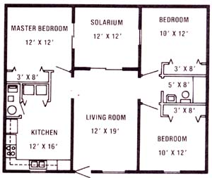

MOST TOP, LEFT Heavy equipment is required for grading and roof installation, but much of the construction can be done by hand. Note the drainage system set outside the perimeter of the foundation.MOST TOP, RIGHT: A waterproof plastic ""wrapping"" and a layer of river rock surround surround the entire structure, which is eventually covered with 2-3 feet of earth. This house was built on level ground, then bermed. TOP, LEFT: The master bedroom ... and the solarium. TOP RIGHT: the living room has a natural light source.